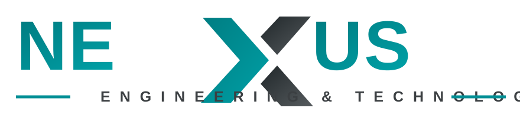

IoT Platforms
Connected sensors, gateways, real-time dashboards, device management, alerts, and secure data pipelines.
- Industrial monitoring
- Asset tracking
- Predictive maintenance

Engineering intelligence for connected machines
We design and build reliable IoT, automation, automotive, and ROV systems that turn complex operations into measurable, connected, and controllable workflows.
NEXUS helps factories, labs, robotics teams, and mobility businesses build dependable hardware, software, and control layers. Every solution is designed around data visibility, safety, serviceability, and long-term scalability.
From sensor selection to cloud dashboards, PLC logic, ECU integration, and underwater control systems, NEXUS delivers complete technical ownership.
Connected sensors, gateways, real-time dashboards, device management, alerts, and secure data pipelines.
PLC, HMI, SCADA, control panels, instrumentation, process optimization, and production line upgrades.
Embedded electronics, vehicle data acquisition, diagnostics, telemetry, and smart mobility integrations.
Remotely operated vehicle control, underwater sensing, camera integration, propulsion, and mission support.
We combine mechanical constraints, electronics, firmware, software, networking, and operator experience into one reliable solution. The result is a system that can be installed, monitored, maintained, and improved over time.
Clear technical scope, constraints, operating conditions, and success metrics.
Hardware, firmware, control logic, dashboards, and communication design.
Testing, commissioning, documentation, training, and ongoing improvements.
Each project is handled with traceable decisions, documented assumptions, and staged validation before full deployment.
We inspect the problem, environment, available data, risks, and integration points.
We define the architecture, bill of materials, interfaces, and control strategy.
We develop, assemble, program, and test the first working version.
We commission the system, document it, and prepare the team for operation.
Tell us what you want to monitor, automate, control, or build. We will help you turn it into a clear engineering roadmap.